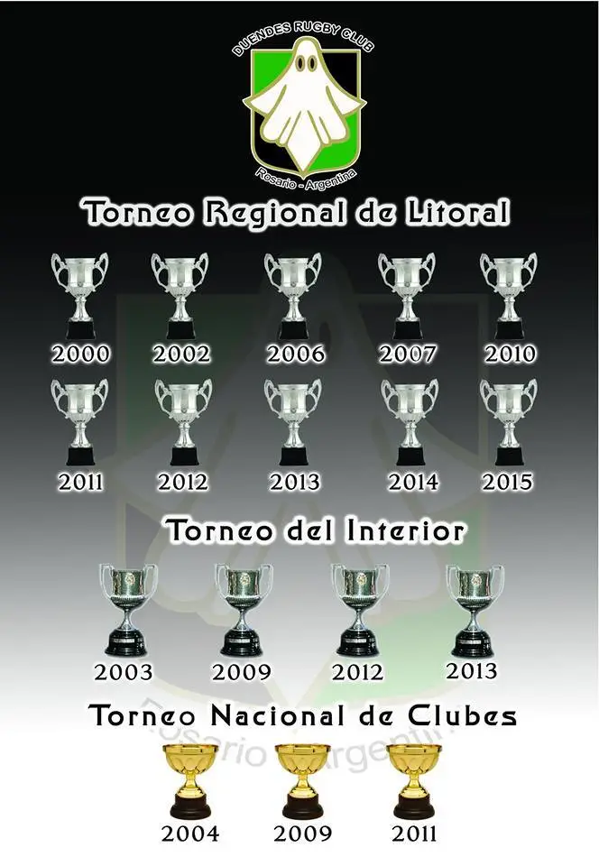

Duendes fue fundado el 5 de Enero de 1957 y se registró el 11 de abril del mismo año en la Unión de Rugby de Rosario. Después de sólo una temporada el club ganó la promoción al nivel superior del sistema de encaje de la liga y ganó su primer título en 1960.
Junto con Atlético del Rosario (Plaza Jewell), Gimnasia y Esgrima de Rosario, y Jockey Club, es uno de los mejores clubes de Rosario, que ganó el torneo regional 15 veces. [cita requerida] En cuatro ocasiones (1968, 1969, 1972, 1993) el club se mantuvo invicto durante toda la temporada.
Torneo Nacional de Clubes
Campeón (3): 2004, 2009, 2011 Subcampeón (3): 1999, 2003, 2014 y 2022 Torneo del Interior o Top 16 Campeón (5): 2003, 2009, 2012, 2013, 2022 Subcampeón (1): 2011
Torneo Regional del Litoral
Campeón (12): 2000, 2002, 2006, 2007, 2010, 2011, 2012, 2013, 2014, 2015, 2016, 2018, 2021. Subcampeón (1): 2017
Torneo de la URR
Campeón (15): 1960, 1962, 1963, 1964, 1965, 1966, 1967, 1968, 1969, 1971, 1972, 1993, 1995, 1996, 1997
